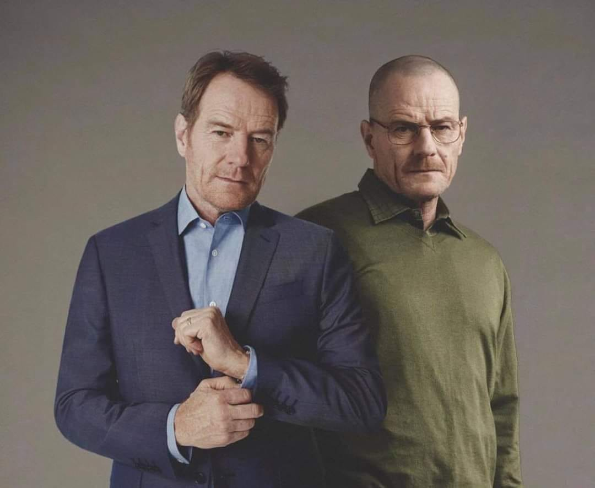

Breaking Bad News

Walter White, um professor colegial de química de 50 anos começa a produzir secretamente metanfetamina
para
proporcionar uma segurança à sua família após descobrir que sofre de um câncer terminal no pulmão. Ele se junta
a
seu ex-aluno, Jesse Pinkman, que é vendedor da droga.A transição de White, do desesperado pai de família ao implacável e maquiavélico gângster do tráfico, sob o pseudônimo de Heisenberg, é a premissa de Breaking Bad.